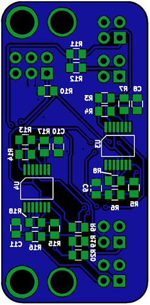

Based on the MERG "Hector", use reflected IR to detect trains
View stable on master branch the-nw1-group/acb-modules/misc/quad-ir
View latest on develop branch the-nw1-group/acb-modules/misc/quad-ir
Derived from the Hector design by Bryan Knight and Pete Brownlow, to whom due credit is acknowledged. This version uses a small ARM processor (the so called 32-bits for 32 cents processor), which allowed 4 inputs over the original 2 inputs. A consequence of this is that the circuit voltage is reduced from 5V to 3.3V, requiring the use of low voltage op-amps. The circuit works by taking a reading of the IR level with the IR LED turned off, then takes a reading when turned on. If it's above the sense threshold the output is pulled low for that detector. If it then goes below the sense threshold a small amount of debouncing is applied before turning the output high.
There are a couple of other changes from the original design: The IR LED current is sourced from the input supply rather than the regulated 3.3V; only occupied outputs are available and these are 3.3V push-pull logic levels, with occupied indicated by a low output; supply voltage can be in the range 4.5V-12V. Finally, then on board status led shows the detection without any debouncing, rather than a logical “or” of the outputs.
The pin functions are:
| Pin | Function | Type | Description |
|---|---|---|---|
| 1 | BOOT0 | I/P | Tied to ground |
| 2 | PF0 | I/O | (IN) Device Enable |
| 3 | PF1 | I/O | (OUT) Detect 4 Output |
| 4 | NRST | RST | SWD - RST |
| 5 | VDDA | S | 3.3v power supply |
| 6 | PA0 | I/0 | (OUT) Detect 3 Output |
| 7 | PA1 | I/0 | Not Used |
| 8 | PA2 | I/0 | (Analog) Sense Threshold |
| 9 | PA3 | I/0 | (Analog) Sense from Head 4 |
| 10 | PA4 | I/0 | (Analog) Sense from Head 3 |
| 11 | PA5 | I/0 | (Analog) Sense from Head 2 |
| 12 | PA6 | I/0 | (Analog) Sense from Head 1 |
| 13 | PA7 | I/0 | (OUT) IR LED Enable |
| 14 | PB1 | I/0 | (OUT) LED Status |
| 15 | VSS | S | Ground |
| 16 | VDD | S | 3.3v power supply |
| 17 | PA9 | I/0 | (OUT) Detect 2 Output |
| 18 | PA10 | I/0 | (OUT) Detect 1 Output |
| 19 | PA13 | I/0 | SWD - SWDIO |
| 20 | PA14 | I/0 | SWD - SWCLK |
Other notable IC's on the board
| Device | Description |
|---|---|
| LMV324 | Quad Low-Voltage Rail-to-Rail Output Operational Amplifier |
Click on the image above for a PDF version.
The top of the board.
The bottom of the board.